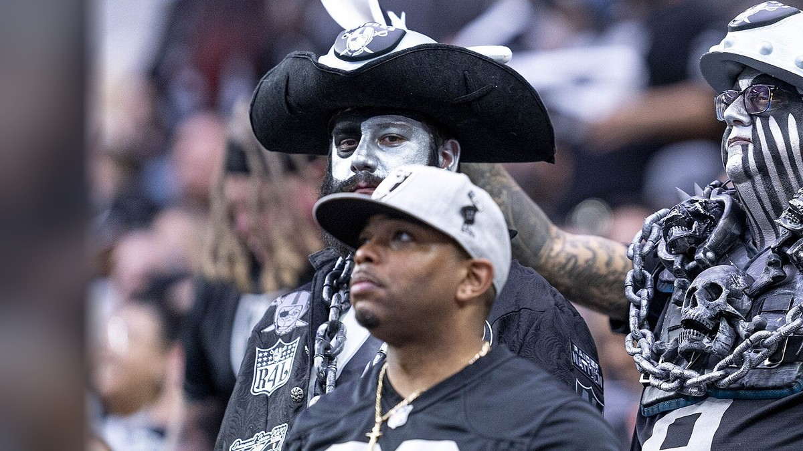

Raiders Injury Report
Who is out, who is questionable and who is on injured reserve for the Silver and Black, kept current through the season at this one address.

The Raiders left Oakland, but half the Bay Area still bleeds silver and black, so they get the same daily report as everybody else. Every player on the league injury report is here with his position, the injury, his status, when he is expected back and when it last changed. It refreshes several times a day, so the link never changes.
The current report
Updated Sat, Nov 14, 1:19 AM Pacific. 0 out or doubtful, 2 questionable, 5 on injured reserve, PUP or another reserve list. Next game: vs Seattle Seahawks, Sun, Nov 15, 1:05 PM Pacific.
| Player | Pos | Injury | Status | Expected back | Last update |
|---|---|---|---|---|---|
| Thomas Booker IV | DT | Ankle | Questionable | Questionable | Fri, Nov 13 |
| Dont'e Thornton Jr. | WR | Back | Questionable | Questionable | Fri, Nov 13 |
| Player | Pos | Injury | Status | Expected back | Last update |
|---|---|---|---|---|---|
| Chigozie Anusiem | CB | Knee | Injured Reserve | Out for the season (est.) | Sat, Aug 22 |
| Keyron Crawford | DE | Ankle | Injured Reserve | Out for the season (est.) | Sun, Aug 30 |
| Patrick Johnson | DE | Neck, stinger | Injured Reserve | About 2 weeks (est. Nov 29) | Sat, Oct 31 |
| Justin Pickett | G | Undisclosed | Injured Reserve | Out for the season (est.) | Wed, Aug 19 |
| Brennan Jackson | LB | Undisclosed | Injured Reserve | Out for the season (est.) | Wed, Aug 19 |
Back off the report in the last 10 days: Aidan O'Connell (QB), Ashton Jeanty (RB), Brock Bowers (TE), Bryce Cabeldue (G), Cody White (WR), Dalton Johnson (S), Darien Porter (CB), Fernando Mendoza (QB), Folorunso Fatukasi (DT), Ian Thomas (TE), Jack Bech (WR), Jalen Nailor (WR), Jeremy Chinn (S), Malik Benson (WR), Matt Gay (PK), Michael Mayer (TE), Mike Washington Jr. (RB), Nakobe Dean (LB), Quay Walker (LB), Tre Tucker (WR), Trey Zuhn III (C), Treydan Stukes (S).
Quick answers
Who is out for the Raiders right now?
As of Sat, Nov 14: Patrick Johnson (injured reserve), Keyron Crawford (injured reserve), Chigozie Anusiem (injured reserve), Justin Pickett (injured reserve) and Brennan Jackson (injured reserve).
Who is questionable or day to day for the Raiders?
As of Sat, Nov 14: Thomas Booker IV (questionable) and Dont'e Thornton Jr. (questionable).
When is Patrick Johnson expected back?
About 2 weeks (est. Nov 29). He is listed as injured reserve (neck, stinger), last updated Sat, Oct 31.
When is Keyron Crawford expected back?
Out for the season (est.). He is listed as injured reserve (ankle), last updated Sun, Aug 30.
When is Chigozie Anusiem expected back?
Out for the season (est.). He is listed as injured reserve (knee), last updated Sat, Aug 22.
When is Justin Pickett expected back?
Out for the season (est.). He is listed as injured reserve (undisclosed), last updated Wed, Aug 19.
How to read it
Out means he will not play in the next game. Doubtful means he is unlikely to. Questionable is a genuine maybe, and plenty of questionable players suit up. Injured reserve takes a player off the active roster for at least four games, and PUP is the physically unable to perform list, for players still recovering from an injury they already had.
Expected back is the latest timeline we can stand behind. When the update names one, like six weeks or two to three weeks, it shows here in plain numbers with the date it was reported. When it does not, you see the estimated return date carried on the league report, marked est. Timelines move, and this page moves with them. If nothing has been reported, it says no timeline yet. Practice participation is not shown: if the feed does not report it, we do not guess at it.
Where the numbers come from
Status, designation and injury come from the league injury report as published through ESPN, read automatically. Nothing in the tables is typed in by hand. When the team announces something the feed has not caught yet, it shows up here on the next refresh, usually within a few hours. See our editorial standards and corrections policy.
For more, see our 2026 Raiders season preview.
Every Bay Area injury report
Every Bay Area team · 49ers · Warriors · Giants · A's · Sharks